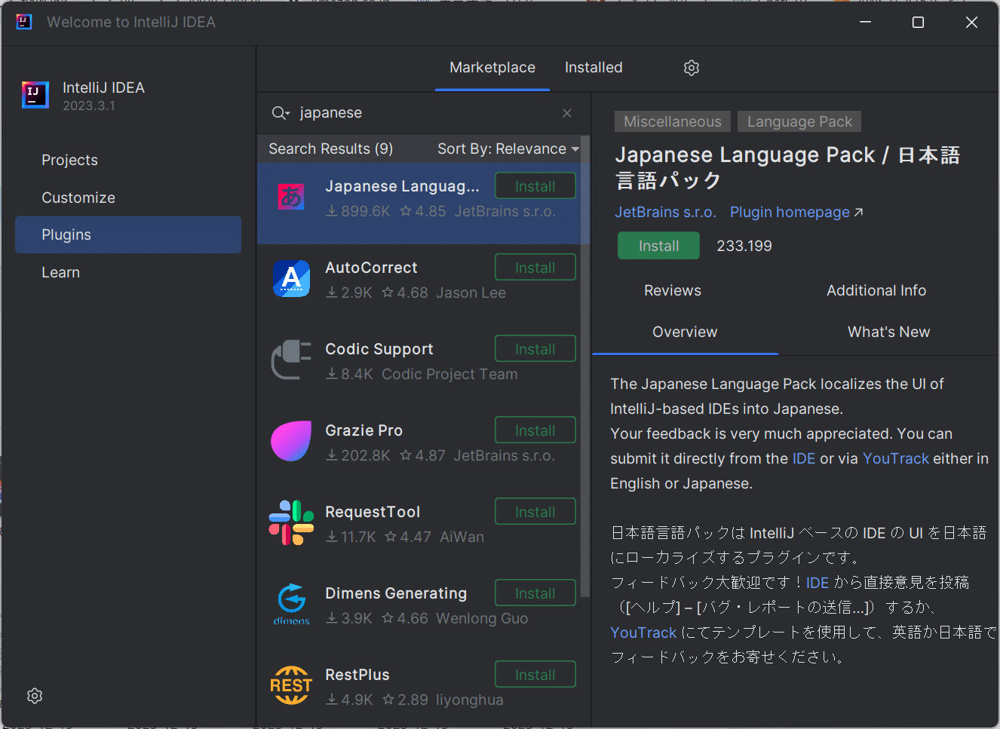
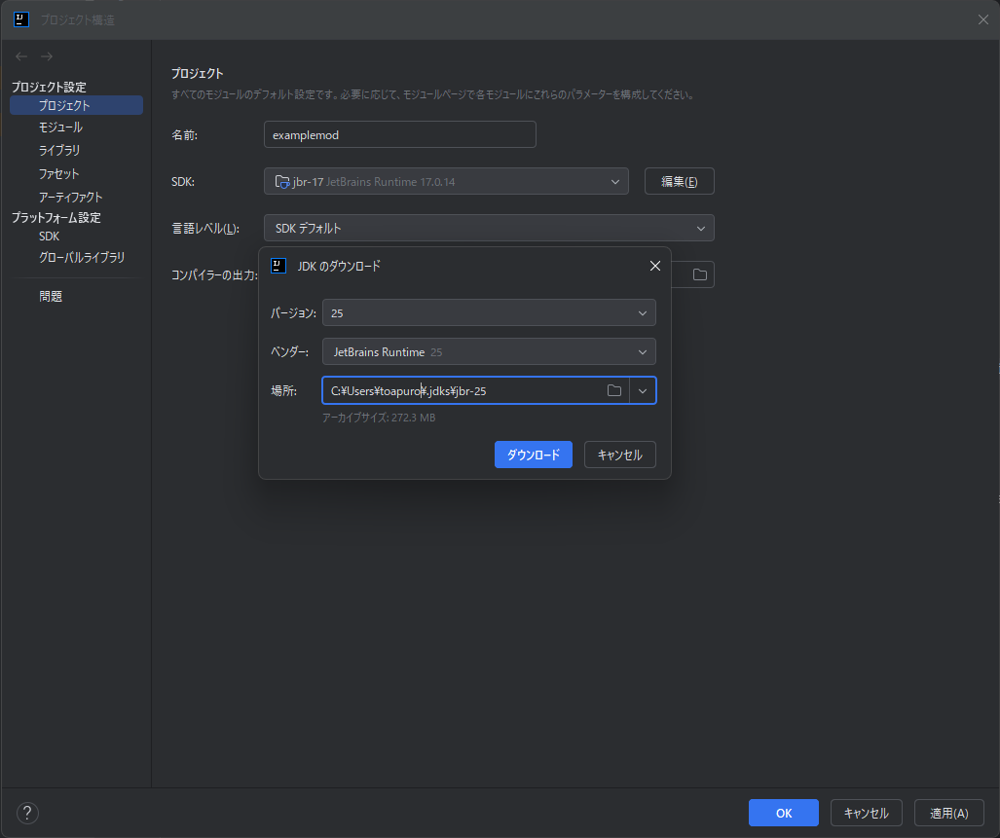

環境構築¶
Intellijのセットアップ¶
エディタについて
Eclipse IDE や VSCode でも開発できますが、この章では触れません。
-
Intellij IDEAのインストール
-
日本語化 (任意)
Intellijを起動してランチャーメニューになったら、サイドバーのPluginsタブから Japanese Language Pack と検索してインストールします。 インストール後に Intellij を再起動すれば日本語化が反映されます。 
-
Minecraft Development プラグインをインストール
同じくPluginsタブから Minecraft Development と検索してインストールし、完了したら一度 Intellij を再起動してください。
前提知識¶
スキップしても大丈夫ですが、迷ったときに軽く振り返ってもらえると理解しやすくなります
| 用語 | 備考 |
|---|---|
| Mixin | これをオンにしない場合、依存関係を設定する時に面倒なので、オンにしておくことをおすすめします |
| License | その Mod の著作権の扱い方を宣言するもので、依存関係を設定する時、確認する必要があります |
| Group ID | パッケージの指定。ドメインを逆に書く。ドメインを持っていなければ io.github.作者名 のような形式が良い |
| Package | パッケージ。クラスをグループで管理できる仕組みで、実態としてはフォルダとほぼ同じ |
| Artifact ID | 基本的にModのIDを書いておく |
| Class | Java でコードを書く基本単位。1クラス1ファイルで機能ごとに分割できる |
Modローダー
| プラットフォーム | 備考 |
|---|---|
| NeoForge | 1.20.4 以降はこちら。1.20.4 以降のバージョンを開発する、ほとんどの開発者が移行済み。 |
| Forge | 1.20.4 未満ならこちら |
1.20.1は特別にNeoForgeとForgeどちらも対応しています
Mod開発環境のセットアップ¶
いくつか方法があります
NeoForgeであれば 1, (NeoForge/Fabric) Mod ジェネレータの利用 を推奨
Fabricであれば 1, (NeoForge/Fabric) Mod ジェネレータの利用 を推奨
Forgeであれば 4, (NeoForge/Forge/Fabric) Intellijプラグイン経由で生成 を推奨
1, (NeoForge/Fabric) Mod ジェネレータの利用¶
NeoForge (1.20.4 以降)
NeoForge Mod Generator
Fabricならこちら
Fabric Template
2, (NeoForge) テンプレートをクローン¶
ここにあるリポジトリの中から対象のバージョンを探して、 右上の Code->Download ZIP からダウンロード・解凍し、build.gradle を開けば IDE が立ち上がるはずです。
Tip
git clone --depth 1 https://github.com/~~ でクローンしても大丈夫です(depth=1 は不要なコミットを省くため)。
3, (Forge) Forge MDK1の利用¶
こちらからバージョンを選択して MDK をダウンロードし解凍、build.gradle を開きます。
Tip
LatestとRecommendedの違いは基本的にあまりありません。どちらでもよし。
4, (NeoForge/Forge/Fabric) Intellijプラグイン経由で生成¶
プロジェクトを新規作成するとき左下にあるジェネレータから Minecraft を選択し、各項目を入力して作成を押してください。
Note
JDKの指定が必要な場合は Java JDK(Intellij IDE) を参考にしてみてください。
Java JDK(Intellij IDE)¶
JDK は Java を実行するためのキットのようなもの、と捉えてもらえればOKです。
以下のテーブルのように、マイクラバージョンごとに JDK が異なり、基本的に開発環境もこれに合わせます。
| MC バージョン | JDK バージョン |
|---|---|
| 1.16.x | JDK 8 |
| 1.17.x | JDK 16 |
| 1.18.x | JDK 17 |
| 1.19.x | JDK 17 |
| 1.20.x | JDK 17 |
| 1.21.x | JDK 21 |
ダウンロード¶
Intellij であれば、左上の ≡ メニュー->ファイル->プロジェクト構成->プロジェクトと進み、SDK2を指定できると思いますが、そこでJDKのダウンロード...を選択することでダウンロードできます。

バージョンは先程のテーブルを参考に設定してください。
ベンダー3の選択ができると思いますが、特にこだわりがなければ JetBrains Runtime がおすすめです。
Info
Jetbrains Runtime ではホットスワップという、実行中にコードを変更して適用させられる機能が使えます。
また、デスクトップにJDKをいれておいても損はないです。 面倒くさかったら必要になったときにダウンロードしておきましょう。
少ないですがいくつかベンダーを紹介しておきます。
テンプレートの編集¶
ジェネレータや、プラグインから生成した場合でも変更する箇所があります。
gradle.properties に mod_id や、 mod_name 等がテンプレートのままなので、それを適切な値に変更してください
src/main/javaの下にある*Mod.javaも同様に MODID を変更してください。
以下例
minecraft_version_range=[1.20.1] // 単一バージョンのみ対応の場合[バージョン]のように記述
...
mod_id=modding_example // Mod ID
mod_name=ModdingExample // Mod名
mod_license=MIT // 好きなライセンスを指定
mod_group_id=dev.toapuro // グループID。#前提知識を参照
mod_authors=toapuro, another_author // 作者一覧
mod_description=A example mod // Modの説明
分からない用語は #前提知識 を参照してください
ビルド・実行の方法¶
右側にある以下のような gradle アイコンを押すと、ビルドに関連する操作ができます。
build.gradleを変更した場合、サイドバーの左上にループするようなアイコンがあるので、それを押すと変更が適用されます。
jarへビルドする場合は Tasks->build->build
開発環境で実際に動作を確認したいのであれば Tasks->forgegradle runs->runClient にあるかと思います。
初心者向けの解説は一旦ここまでです。